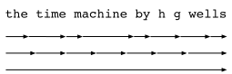
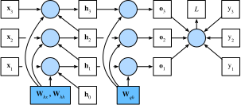

Rétropropagation à travers le temps
Si vous avez terminé les exercices de la sec_rnn-scratch, vous avez pu constater que l’écrêtage des gradients (gradient clipping) est vital pour empêcher les gradients massifs occasionnels de déstabiliser l’entraînement. Nous avions suggéré que l’explosion des gradients provient de la rétropropagation à travers de longues séquences. Avant d’introduire une flopée d’architectures modernes de RNN, examinons de plus près, avec précision mathématique, comment la rétropropagation fonctionne dans les modèles séquentiels. Espérons que cette discussion apportera de la précision aux notions de disparition et d’explosion des gradients. Si vous vous souvenez de notre discussion sur la propagation avant et arrière à travers les graphes de calcul lors de l’introduction des MLP dans la sec_backprop, alors la propagation avant dans les RNN devrait être relativement simple. L’application de la rétropropagation dans les RNN est appelée rétropropagation à travers le temps (backpropagation through time) [Werbos.1990]. Cette procédure nous oblige à étendre (ou déplier) le graphe de calcul d’un RNN un pas de temps à la fois. Le RNN déplié est essentiellement un réseau de neurones à propagation avant (feedforward) avec la propriété particulière que les mêmes paramètres sont répétés tout au long du réseau déplié, apparaissant à chaque pas de temps. Ensuite, comme dans tout réseau de neurones à propagation avant, nous pouvons appliquer la règle de la chaîne, en rétropropageant les gradients à travers le réseau déplié. Le gradient par rapport à chaque paramètre doit être sommé sur tous les endroits où le paramètre apparaît dans le réseau déplié. La gestion d’un tel partage de poids (weight tying) devrait vous être familière d’après nos chapitres sur les réseaux de neurones convolutionnels.
Des complications surviennent parce que les séquences peuvent être assez longues. Il n’est pas rare de travailler avec des séquences de texte composées de plus de mille jetons. Notez que cela pose des problèmes tant du point de vue computationnel (trop de mémoire) que de l’optimisation (instabilité numérique). L’entrée du premier pas traverse plus de 1000 produits matriciels avant d’arriver à la sortie, et 1000 autres produits matriciels sont nécessaires pour calculer le gradient. Nous analysons maintenant ce qui peut mal tourner et comment y remédier en pratique.
Analyse des gradients dans les RNN
Nous commençons par un modèle simplifié du fonctionnement d’un RNN. Ce modèle ignore les détails sur les spécificités de l’état caché et la manière dont il est mis à jour. La notation mathématique ici ne distingue pas explicitement les scalaires, les vecteurs et les matrices. Nous essayons simplement de développer une certaine intuition. Dans ce modèle simplifié, nous notons \(h_t\) l’état caché, \(x_t\) l’entrée et \(o_t\) la sortie au pas de temps \(t\). Rappelez-vous nos discussions dans la subsec_rnn_w_hidden_states selon lesquelles l’entrée et l’état caché peuvent être concaténés avant d’être multipliés par une variable de poids dans la couche cachée. Ainsi, nous utilisons \(w_\textrm{h}\) et \(w_\textrm{o}\) pour indiquer respectivement les poids de la couche cachée et de la couche de sortie. Par conséquent, les états cachés et les sorties à chaque pas de temps sont
\[\begin{aligned}h_t &= f(x_t, h_{t-1}, w_\textrm{h}),\\o_t &= g(h_t, w_\textrm{o}),\end{aligned}\] où \(f\) et \(g\) sont respectivement des transformations de la couche cachée et de la couche de sortie. Par conséquent, nous avons une chaîne de valeurs \(\{\ldots, (x_{t-1}, h_{t-1}, o_{t-1}), (x_{t}, h_{t}, o_t), \ldots\}\) qui dépendent les unes des autres via un calcul récurrent. La propagation avant est assez simple. Tout ce dont nous avons besoin est de parcourir les triplets \((x_t, h_t, o_t)\) un pas de temps à la fois. L’écart entre la sortie \(o_t\) et la cible souhaitée \(y_t\) est ensuite évalué par une fonction objectif sur l’ensemble des \(T\) pas de temps comme
\[L(x_1, \ldots, x_T, y_1, \ldots, y_T, w_\textrm{h}, w_\textrm{o}) = \frac{1}{T}\sum_{t=1}^T l(y_t, o_t).\]
Pour la rétropropagation, les choses sont un peu plus délicates, surtout lorsque nous calculons les gradients par rapport aux paramètres \(w_\textrm{h}\) de la fonction objectif \(L\). Pour être précis, selon la règle de la chaîne,
\[\begin{aligned}\frac{\partial L}{\partial w_\textrm{h}} & = \frac{1}{T}\sum_{t=1}^T \frac{\partial l(y_t, o_t)}{\partial w_\textrm{h}} \\& = \frac{1}{T}\sum_{t=1}^T \frac{\partial l(y_t, o_t)}{\partial o_t} \frac{\partial g(h_t, w_\textrm{o})}{\partial h_t} \frac{\partial h_t}{\partial w_\textrm{h}}.\end{aligned}\] Les premier et deuxième facteurs du produit dans eq_bptt_partial_L_wh sont faciles à calculer. Le troisième facteur \(\partial h_t/\partial w_\textrm{h}\) est là où les choses se compliquent, car nous devons calculer de manière récurrente l’effet du paramètre \(w_\textrm{h}\) sur \(h_t\). Selon le calcul récurrent dans eq_bptt_ht_ot, \(h_t\) dépend à la fois de \(h_{t-1}\) et de \(w_\textrm{h}\), où le calcul de \(h_{t-1}\) dépend également de \(w_\textrm{h}\). Ainsi, l’évaluation de la dérivée totale de \(h_t\) par rapport à \(w_\textrm{h}\) en utilisant la règle de la chaîne donne
\[\frac{\partial h_t}{\partial w_\textrm{h}}= \frac{\partial f(x_{t},h_{t-1},w_\textrm{h})}{\partial w_\textrm{h}} +\frac{\partial f(x_{t},h_{t-1},w_\textrm{h})}{\partial h_{t-1}} \frac{\partial h_{t-1}}{\partial w_\textrm{h}}.\] Pour dériver le gradient ci-dessus, supposons que nous ayons trois séquences \(\{a_{t}\},\{b_{t}\},\{c_{t}\}\) satisfaisant \(a_{0}=0\) et \(a_{t}=b_{t}+c_{t}a_{t-1}\) pour \(t=1, 2,\ldots\). Alors pour \(t\geq 1\), il est facile de montrer que
\[a_{t}=b_{t}+\sum_{i=1}^{t-1}\left(\prod_{j=i+1}^{t}c_{j}\right)b_{i}.\] En substituant \(a_t\), \(b_t\) et \(c_t\) selon
\[\begin{aligned}a_t &= \frac{\partial h_t}{\partial w_\textrm{h}},\\ b_t &= \frac{\partial f(x_{t},h_{t-1},w_\textrm{h})}{\partial w_\textrm{h}}, \\ c_t &= \frac{\partial f(x_{t},h_{t-1},w_\textrm{h})}{\partial h_{t-1}},\end{aligned}\]
le calcul du gradient dans eq_bptt_partial_ht_wh_recur satisfait \(a_{t}=b_{t}+c_{t}a_{t-1}\). Ainsi, selon eq_bptt_at, nous pouvons supprimer le calcul récurrent dans eq_bptt_partial_ht_wh_recur avec
\[\frac{\partial h_t}{\partial w_\textrm{h}}=\frac{\partial f(x_{t},h_{t-1},w_\textrm{h})}{\partial w_\textrm{h}}+\sum_{i=1}^{t-1}\left(\prod_{j=i+1}^{t} \frac{\partial f(x_{j},h_{j-1},w_\textrm{h})}{\partial h_{j-1}} \right) \frac{\partial f(x_{i},h_{i-1},w_\textrm{h})}{\partial w_\textrm{h}}.\] Bien que nous puissions utiliser la règle de la chaîne pour calculer \(\partial h_t/\partial w_\textrm{h}\) de manière récursive, cette chaîne peut devenir très longue chaque fois que \(t\) est grand. Discutons d’un certain nombre de stratégies pour faire face à ce problème.
Calcul complet
Une idée pourrait être de calculer la somme complète dans eq_bptt_partial_ht_wh_gen. Cependant, c’est très lent et les gradients peuvent exploser, car des changements subtils dans les conditions initiales peuvent potentiellement affecter beaucoup le résultat. C’est-à-dire que nous pourrions voir des choses similaires à l’effet papillon, où des changements minimaux dans les conditions initiales entraînent des changements disproportionnés dans le résultat. C’est généralement indésirable. Après tout, nous recherchons des estimateurs robustes qui se généralisent bien. Par conséquent, cette stratégie n’est presque jamais utilisée en pratique.
Troncature des pas de temps
Alternativement, nous pouvons tronquer la somme dans eq_bptt_partial_ht_wh_gen après \(\tau\) pas. C’est ce dont nous avons discuté jusqu’à présent. Cela conduit à une approximation du vrai gradient, simplement en terminant la somme à \(\partial h_{t-\tau}/\partial w_\textrm{h}\). En pratique, cela fonctionne assez bien. C’est ce qu’on appelle communément la rétropropagation tronquée à travers le temps (truncated backpropagation through time) [Jaeger.2002]. L’une des conséquences est que le modèle se concentre principalement sur l’influence à court terme plutôt que sur les conséquences à long terme. C’est en fait souhaitable, car cela biaise l’estimation vers des modèles plus simples et plus stables.
Troncature aléatoire
Enfin, nous pouvons remplacer \(\partial h_t/\partial w_\textrm{h}\) par une variable aléatoire qui est correcte en espérance mais tronque la séquence. Ceci est réalisé en utilisant une séquence de \(\xi_t\) avec des \(0 \leq \pi_t \leq 1\) prédéfinis, où \(P(\xi_t = 0) = 1-\pi_t\) et \(P(\xi_t = \pi_t^{-1}) = \pi_t\), donc \(E[\xi_t] = 1\). Nous utilisons cela pour remplacer le gradient \(\partial h_t/\partial w_\textrm{h}\) dans eq_bptt_partial_ht_wh_recur avec
\[z_t= \frac{\partial f(x_{t},h_{t-1},w_\textrm{h})}{\partial w_\textrm{h}} +\xi_t \frac{\partial f(x_{t},h_{t-1},w_\textrm{h})}{\partial h_{t-1}} \frac{\partial h_{t-1}}{\partial w_\textrm{h}}.\]
Il découle de la définition de \(\xi_t\) que \(E[z_t] = \partial h_t/\partial w_\textrm{h}\). Chaque fois que \(\xi_t = 0\), le calcul récurrent se termine à ce pas de temps \(t\). Cela conduit à une somme pondérée de séquences de longueurs variables, où les séquences longues sont rares mais convenablement surpondérées. Cette idée a été proposée par [Tallec.Ollivier.2017].
Comparaison des stratégies

La fig_truncated_bptt illustre les trois stratégies lors de l’analyse des premiers caractères de La Machine à explorer le temps en utilisant la rétropropagation à travers le temps pour les RNN :- La première ligne est la troncature aléatoire qui divise le texte en segments de longueurs variables.
- La deuxième ligne est la troncature régulière qui divise le texte en sous-séquences de même longueur. C’est ce que nous avons fait dans les expériences sur les RNN.
- La troisième ligne est la rétropropagation complète à travers le temps qui conduit à une expression impossible à calculer en pratique.
Malheureusement, bien qu’attrayante en théorie, la troncature aléatoire ne fonctionne pas beaucoup mieux que la troncature régulière, très probablement en raison d’un certain nombre de facteurs. Premièrement, l’effet d’une observation après un certain nombre d’étapes de rétropropagation dans le passé est tout à fait suffisant pour capturer les dépendances en pratique. Deuxièmement, la variance accrue contrecarre le fait que le gradient est plus précis avec plus d’étapes. Troisièmement, nous voulons en fait des modèles qui n’ont qu’une courte portée d’interactions. Par conséquent, la rétropropagation à travers le temps régulièrement tronquée a un léger effet régularisateur qui peut être souhaitable.
La rétropropagation à travers le temps en détail
Après avoir discuté du principe général, discutons en détail de la rétropropagation à travers le temps. Contrairement à l’analyse de la subsec_bptt_analysis, nous allons montrer dans ce qui suit comment calculer les gradients de la fonction objectif par rapport à tous les paramètres décomposés du modèle. Pour simplifier les choses, nous considérons un RNN sans paramètres de biais, dont la fonction d’activation dans la couche cachée utilise l’application identité (\(\phi(x)=x\)). Pour le pas de temps \(t\), soient l’entrée d’un seul exemple et la cible respectivement \(\mathbf{x}_t \in \mathbb{R}^d\) et \(y_t\). L’état caché \(\mathbf{h}_t \in \mathbb{R}^h\) et la sortie \(\mathbf{o}_t \in \mathbb{R}^q\) sont calculés comme
\[\begin{aligned}\mathbf{h}_t &= \mathbf{W}_\textrm{hx} \mathbf{x}_t + \mathbf{W}_\textrm{hh} \mathbf{h}_{t-1},\\ \mathbf{o}_t &= \mathbf{W}_\textrm{qh} \mathbf{h}_{t},\end{aligned}\]
où \(\mathbf{W}_\textrm{hx} \in \mathbb{R}^{h \times d}\), \(\mathbf{W}_\textrm{hh} \in \mathbb{R}^{h \times h}\) et \(\mathbf{W}_\textrm{qh} \in \mathbb{R}^{q \times h}\) sont les paramètres de poids. Désignons par \(l(\mathbf{o}_t, y_t)\) la perte au pas de temps \(t\). Notre fonction objectif, la perte sur \(T\) pas de temps depuis le début de la séquence, est donc
\[L = \frac{1}{T} \sum_{t=1}^T l(\mathbf{o}_t, y_t).\]
Afin de visualiser les dépendances entre les variables et les paramètres du modèle lors du calcul du RNN, nous pouvons dessiner un graphe de calcul pour le modèle, comme illustré dans la fig_rnn_bptt. Par exemple, le calcul de l’état caché du pas de temps 3, \(\mathbf{h}_3\), dépend des paramètres du modèle \(\mathbf{W}_\textrm{hx}\) et \(\mathbf{W}_\textrm{hh}\), de l’état caché du pas de temps précédent \(\mathbf{h}_2\) et de l’entrée du pas de temps actuel \(\mathbf{x}_3\).

Comme nous venons de le mentionner, les paramètres du modèle dans la fig_rnn_bptt sont \(\mathbf{W}_\textrm{hx}\), \(\mathbf{W}_\textrm{hh}\) et \(\mathbf{W}_\textrm{qh}\). Généralement, l’entraînement de ce modèle nécessite le calcul du gradient par rapport à ces paramètres \(\partial L/\partial \mathbf{W}_\textrm{hx}\), \(\partial L/\partial \mathbf{W}_\textrm{hh}\) et \(\partial L/\partial \mathbf{W}_\textrm{qh}\). Selon les dépendances de la fig_rnn_bptt, nous pouvons parcourir le graphe dans le sens opposé des flèches pour calculer et stocker les gradients tour à tour. Pour exprimer de manière flexible la multiplication de matrices, vecteurs et scalaires de différentes formes dans la règle de la chaîne, nous continuons à utiliser l’opérateur \(\textrm{prod}\) tel que décrit dans la sec_backprop.Tout d’abord, la dérivation de la fonction objectif par rapport à la sortie du modèle à n’importe quel pas de temps \(t\) est assez simple :
\[\frac{\partial L}{\partial \mathbf{o}_t} = \frac{\partial l (\mathbf{o}_t, y_t)}{T \cdot \partial \mathbf{o}_t} \in \mathbb{R}^q.\] Nous pouvons maintenant calculer le gradient de l’objectif par rapport au paramètre \(\mathbf{W}_\textrm{qh}\) dans la couche de sortie : \(\partial L/\partial \mathbf{W}_\textrm{qh} \in \mathbb{R}^{q \times h}\). Sur la base de la fig_rnn_bptt, l’objectif \(L\) dépend de \(\mathbf{W}_\textrm{qh}\) via \(\mathbf{o}_1, \ldots, \mathbf{o}_T\). L’utilisation de la règle de la chaîne donne
\[ \frac{\partial L}{\partial \mathbf{W}_\textrm{qh}} = \sum_{t=1}^T \textrm{prod}\left(\frac{\partial L}{\partial \mathbf{o}_t}, \frac{\partial \mathbf{o}_t}{\partial \mathbf{W}_\textrm{qh}}\right) = \sum_{t=1}^T \frac{\partial L}{\partial \mathbf{o}_t} \mathbf{h}_t^\top, \]
où \(\partial L/\partial \mathbf{o}_t\) est donné par eq_bptt_partial_L_ot.
Ensuite, comme le montre la fig_rnn_bptt, au dernier pas de temps \(T\), la fonction objectif \(L\) ne dépend de l’état caché \(\mathbf{h}_T\) que via \(\mathbf{o}_T\). Par conséquent, nous pouvons facilement trouver le gradient \(\partial L/\partial \mathbf{h}_T \in \mathbb{R}^h\) en utilisant la règle de la chaîne :
\[\frac{\partial L}{\partial \mathbf{h}_T} = \textrm{prod}\left(\frac{\partial L}{\partial \mathbf{o}_T}, \frac{\partial \mathbf{o}_T}{\partial \mathbf{h}_T} \right) = \mathbf{W}_\textrm{qh}^\top \frac{\partial L}{\partial \mathbf{o}_T}.\] Cela devient plus délicat pour n’importe quel pas de temps \(t < T\), où la fonction objectif \(L\) dépend de \(\mathbf{h}_t\) via \(\mathbf{h}_{t+1}\) et \(\mathbf{o}_t\). Selon la règle de la chaîne, le gradient de l’état caché \(\partial L/\partial \mathbf{h}_t \in \mathbb{R}^h\) à n’importe quel pas de temps \(t < T\) peut être calculé de manière récurrente comme suit :
\[\frac{\partial L}{\partial \mathbf{h}_t} = \textrm{prod}\left(\frac{\partial L}{\partial \mathbf{h}_{t+1}}, \frac{\partial \mathbf{h}_{t+1}}{\partial \mathbf{h}_t} \right) + \textrm{prod}\left(\frac{\partial L}{\partial \mathbf{o}_t}, \frac{\partial \mathbf{o}_t}{\partial \mathbf{h}_t} \right) = \mathbf{W}_\textrm{hh}^\top \frac{\partial L}{\partial \mathbf{h}_{t+1}} + \mathbf{W}_\textrm{qh}^\top \frac{\partial L}{\partial \mathbf{o}_t}.\] Pour l’analyse, le développement du calcul récurrent pour tout pas de temps \(1 \leq t \leq T\) donne
\[\frac{\partial L}{\partial \mathbf{h}_t}= \sum_{i=t}^T {\left(\mathbf{W}_\textrm{hh}^\top\right)}^{T-i} \mathbf{W}_\textrm{qh}^\top \frac{\partial L}{\partial \mathbf{o}_{T+t-i}}.\] Nous pouvons voir d’après eq_bptt_partial_L_ht que ce simple exemple linéaire présente déjà certains problèmes clés des modèles de séquences longues : il implique des puissances potentiellement très grandes de \(\mathbf{W}_\textrm{hh}^\top\). En son sein, les valeurs propres inférieures à 1 disparaissent et les valeurs propres supérieures à 1 divergent. C’est numériquement instable, ce qui se manifeste sous la forme de disparition et d’explosion des gradients. Une façon d’y remédier est de tronquer les pas de temps à une taille pratique pour le calcul, comme discuté dans la subsec_bptt_analysis. En pratique, cette troncature peut également être effectuée en détachant le gradient après un nombre donné de pas de temps. Plus tard, nous verrons comment des modèles de séquences plus sophistiqués tels que la mémoire à long et court terme (long short-term memory) peuvent atténuer davantage ce problème.
Enfin, la fig_rnn_bptt montre que la fonction objectif \(L\) dépend des paramètres du modèle \(\mathbf{W}_\textrm{hx}\) et \(\mathbf{W}_\textrm{hh}\) dans la couche cachée via les états cachés \(\mathbf{h}_1, \ldots, \mathbf{h}_T\). Pour calculer les gradients par rapport à ces paramètres \(\partial L / \partial \mathbf{W}_\textrm{hx} \in \mathbb{R}^{h \times d}\) et \(\partial L / \partial \mathbf{W}_\textrm{hh} \in \mathbb{R}^{h \times h}\), nous appliquons la règle de la chaîne, ce qui donne
\[ \begin{aligned} \frac{\partial L}{\partial \mathbf{W}_\textrm{hx}} &= \sum_{t=1}^T \textrm{prod}\left(\frac{\partial L}{\partial \mathbf{h}_t}, \frac{\partial \mathbf{h}_t}{\partial \mathbf{W}_\textrm{hx}}\right) = \sum_{t=1}^T \frac{\partial L}{\partial \mathbf{h}_t} \mathbf{x}_t^\top,\\ \frac{\partial L}{\partial \mathbf{W}_\textrm{hh}} &= \sum_{t=1}^T \textrm{prod}\left(\frac{\partial L}{\partial \mathbf{h}_t}, \frac{\partial \mathbf{h}_t}{\partial \mathbf{W}_\textrm{hh}}\right) = \sum_{t=1}^T \frac{\partial L}{\partial \mathbf{h}_t} \mathbf{h}_{t-1}^\top, \end{aligned} \]
où \(\partial L/\partial \mathbf{h}_t\), qui est calculé de manière récurrente par eq_bptt_partial_L_hT_final_step et eq_bptt_partial_L_ht_recur, est la quantité clé qui affecte la stabilité numérique.
Étant donné que la rétropropagation à travers le temps est l’application de la rétropropagation dans les RNN, comme nous l’avons expliqué dans la sec_backprop, l’entraînement des RNN alterne la propagation avant avec la rétropropagation à travers le temps. De plus, la rétropropagation à travers le temps calcule et stocke tour à tour les gradients ci-dessus. Plus précisément, les valeurs intermédiaires stockées sont réutilisées pour éviter les calculs en double, comme le stockage de \(\partial L/\partial \mathbf{h}_t\) destiné à être utilisé dans le calcul de \(\partial L / \partial \mathbf{W}_\textrm{hx}\) et \(\partial L / \partial \mathbf{W}_\textrm{hh}\).
Résumé
- La rétropropagation à travers le temps n’est qu’une application de la rétropropagation aux modèles séquentiels avec un état caché.
- La troncature, qu’elle soit régulière ou aléatoire, est nécessaire pour la commodité du calcul et la stabilité numérique.
- Les puissances élevées de matrices peuvent conduire à des valeurs propres divergentes ou s’évanouissant. Cela se manifeste sous la forme d’explosion ou de disparition des gradients.
- Pour un calcul efficace, les valeurs intermédiaires sont mises en cache pendant la rétropropagation à travers le temps.
Exercices
- Supposons que nous ayons une matrice symétrique \(\mathbf{M} \in \mathbb{R}^{n \times n}\)
avec des valeurs propres \(\lambda_i\)
dont les vecteurs propres correspondants sont \(\mathbf{v}_i\) (\(i = 1, \ldots, n\)). Sans perte de
généralité, supposons qu’ils soient classés dans l’ordre \(|\lambda_i| \geq |\lambda_{i+1}|\).
- Montrez que \(\mathbf{M}^k\) a des valeurs propres \(\lambda_i^k\).
- Prouvez que pour un vecteur aléatoire \(\mathbf{x} \in \mathbb{R}^n\), avec une probabilité élevée, \(\mathbf{M}^k \mathbf{x}\) sera très aligné avec le vecteur propre \(\mathbf{v}_1\) de \(\mathbf{M}\). Formalisez cette affirmation.
- Que signifie le résultat ci-dessus pour les gradients dans les RNN ?
- Outre l’écrêtage du gradient, pouvez-vous penser à d’autres méthodes pour faire face à l’explosion du gradient dans les réseaux de neurones récurrents ?